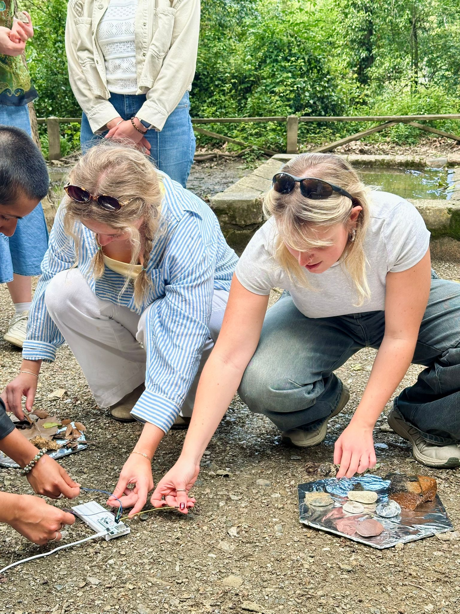
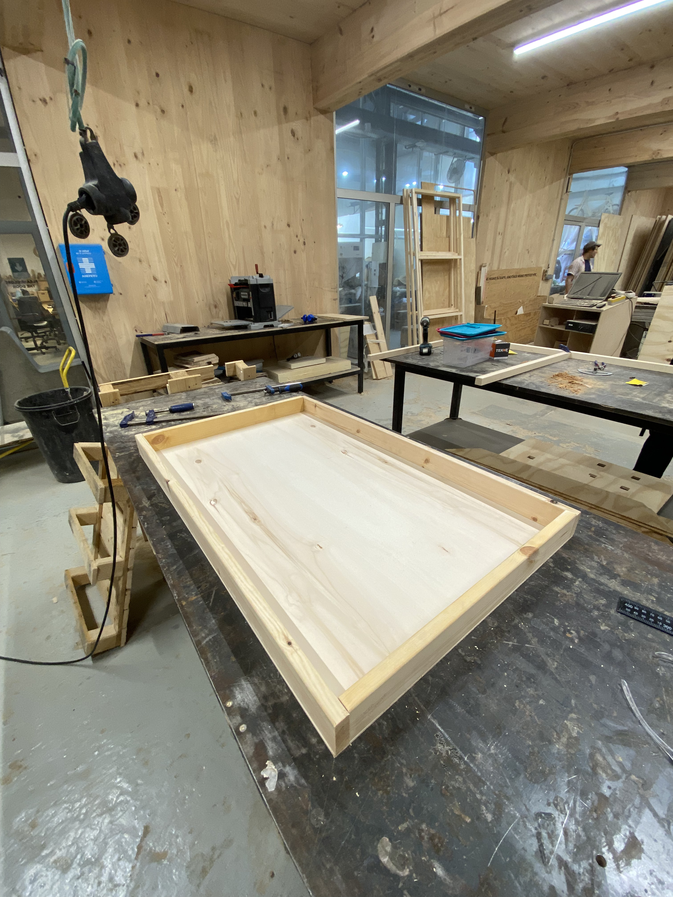
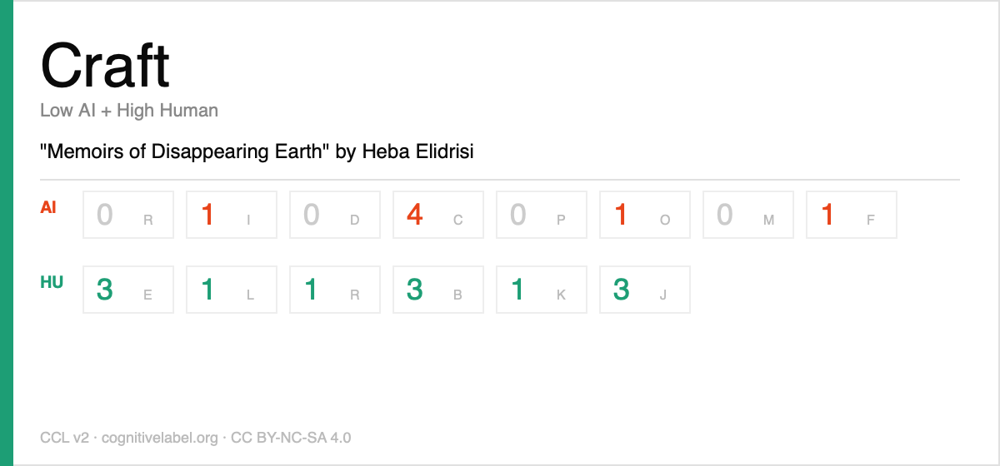

Fabricating MDEFest¶
“Memoirs of Disappearing Earth”¶
Translating live electric currents between human skin and changing landscapes into real-time soundscapes, using a capacitance-sensitive instrument designed to evoke emotion and connection.

As an evolution and culmination of the previous project explorations, with the intention to connect bodily sensations to the raw materiality of nature’s landscapes, “Memoirs of Disappearing Earth” is an interactive sensory intervention that translates tactile exploration into real-time audio landscapes. The human body is transformed into a conductor of its own environment - the catalyst of a musical instrument.
Although the primary and immediate outcome of the interactive ritual is unique sound compositions, the bigger picture is a permanent digital archive of timestamped records: a sonic map encapsulating every human-material meeting. No two encounters will ever sound identical because no two touches, bodies or landscapes are the same. The practice scales intimate, first-person encounters of collecting childhood relics into an evolved collective ritual of awakening and accountability. What is produced is an unrepeatable dialogue between the unique composition of each human body and the textures of the Earth.
Process, Evolution & Traces¶
Entering this fabrication challenge, we already had a solid project concept defined and a strong idea of what it would be. What was not yet solidified was how it would manifest and the physical form the instrument would embody.

Along the way, we battled with several challenges, blocks and limitations.
- Portability - one of the first key objectives we identified based on our previous experimentations from other fabrication challenges or projects was the idea of portability. We wanted it to be an autonomous kit with instructions that would enable users to take it out into the field and activate real-time at the site. The idea was to have all the kit activation instructions outlined on the website interface, allowing users to directly record and upload their encounters to the digital map. It was also a concern we were evaluating for the passive exhibition at Elisava, knowing that we would not be present all day. Therefore, we wanted the artifact to be operational on its own without any external control from us. Some of the options discussed with visiting experts throughout the seminar included running Touch Designer through a Raspberry Pi to eliminate the laptop requirement, but it did not seem very promising. After looking into it and reflecting on the current state of the project, we decided to put the idea of portability on hold to master the core system design of the project: the live sound generation.
- Program - while exploring the concept of portability, we learned about using MIDI over Bluetooth to support a wireless setup. However, it only worked with specific programs like Garage Band (available on iOS devices) and VCV Rack, which is a modular synthesis program. Although we did not have any previous experience with VCV Rack, Beste started playing with it and learning how to generate audio. While the system appeared more complex than Touch Designer, it allowed for more controlled and precise audio generation. The learning was mainly through online tutorials and resources, but we made significant progress after the session with Tim, who had some background knowledge of the program and gave a solid explanation that helped understand it much better. Eventually, the outputs started sounding like what we envisioned, which was very rewarding.
- Physical Form - without a clear definition of the interface and exact interaction methodology, which was constantly changing, it became hard to define and build a physical artifact to accommodate it. I had sketched out several ideas on ways to present it, varying based on whether it used one sensor or multiple, and whether it was for a single user or many. Because these parameters shifted several times throughout the process based on discussions with external visitors and people interacting with the system, the housing changed constantly to accommodate these decisions and improvements. We initially decided on a circle-shaped extruded form where the electronics would be housed inside. Then came the idea of a bowl made from biomaterial that could hold the water as well as the other materials. Finally, after an enlightening discussion with Lara, we decided to recreate the specific landscape in focus (the Llobregat river) to bring the full experience of engaging with site-specific materials to the live activation. I started by looking for a natural looking wood base and then built a slightly extruded frame to recreate the feel of a sandbox. Since we were planning to put the soil, rocks and water from the Llobregat site into this container, it did not need to be very deep. The size was purposefully kept quite large to allow multiple users to interact simultaneously from different sides, supporting the collective experience.

- Sensors & Electronics - there were multiple points throughout the process where we experienced technical difficulties with the hardware of the system. For instance, sometimes the system would get stuck and the whole board would have to be reset for it to start functioning as designed again. Beste had to remap one of the pins because it kept canceling out the other readings. The sensing system had to be recalibrated frequently, especially since we were testing with whatever materials we had on hand in the studio. Once we gathered the final materials from the site, it had to be recalibrated all over again. Even on the day of the activation at the MDEFest, there were moments where the audio generated by one sensor would completely block out the other connections and cause the whole system to get freeze, which required us to hit the reset button on the Barduino. We are yet to confirm exactly what is causing this bug and resolve it, but overall, the sensors create the desired output. Using ECG cables as non-conductive contact points for users to engage with the material proved to be highly effective.
Future¶
Despite some of the setbacks and technical difficulties throughout this process, the outcome was incredibly rewarding and I am very happy with where we are currently. We already know where to take this next. The aim is to resume our portability objective and optimize the system hardware to ensure stability, sensitivity and controlled data regulation. The next sprint would focus on transforming the bulky artifact into a highly portable, compact and self-regulated autonomous kit. This is a crucial step to ensure future feasibility and allow communities to independently use the instrument to archive threatened landscapes globally. The ultimate goal for me is to build a well-connected community of ecological caretakers with a highly-evolved digital archive that is constantly expanding.
